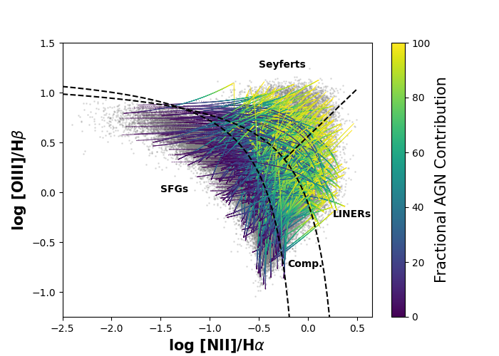
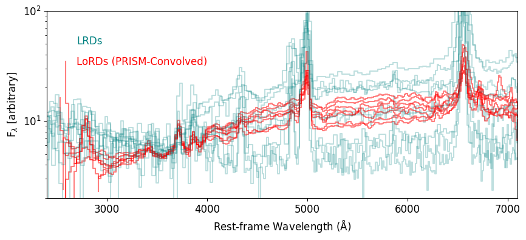
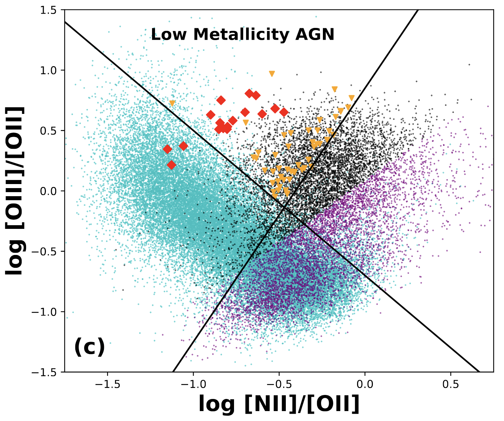
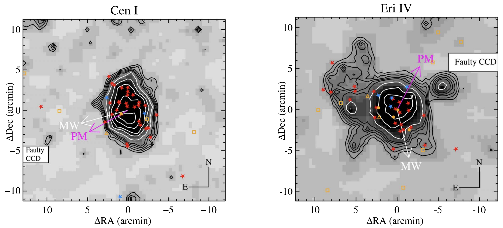

Science
Interests: galaxy evolution, active galactic nuclei, post-starburst galaxies, ultra-faint dwarf galaxies, photoionization modeling, time-domain astronomy, IFU spectroscopy, big data & machine learning
Active galactic nuclei (AGN) are the physical manifestation of accretion onto a supermassive black hole (SMBH) in the center of a galaxy. This process produces radiation across the entire electromagnetic spectrum. Radiation produced by the AGN can dominate the luminosity in the central regions of galaxies, or, in the most extreme cases, outshine the combined stellar light of the host galaxy. Such systems are interesting to study as AGN can have profound impacts on their host galaxy, and these events are some of the most energetic phenomena in the Universe!
AGN Variability
AGN vary on essentially all timescales (hours to millions of years) across the entire electromagnetic spectrum.
There are numerous physical mechanisms which drive this variability, many of which have to do with the rate of accretion onto the SMBH.
The short term variability of AGN is stochastic and likely driven by instabilities in the accretion flow.
When considering AGN on much longer timescales (~100 Myr) they are thought to "flicker" on and off analogous to a bad light bulb.

Fading AGN: As AGN cycle between periods of high and low accretion (i.e., "on" and "off"), there exists a cosmologically brief moment when we can catch them turning off thanks to the light-travel time.
I have conducted a systematic search for such fading AGN in the MaNGA dataset by using spatially resolved BPT diagrams.
To enable this study, I wrote a piece of code to quantify the contribution of an AGN to its observed spectrum by decomposing emission on the BPT diagram (see Figure below).
Given the observed location on the BPT, this model can calculate the percent contribution from the AGN (i.e., 0% - 100%)
The code is open source and easy to use, check it out here.
We found ~30 fading AGN in MaNGA, and the average fading AGN is identified through AGN emission emitted roughly 12,000 years ago (this is around the end of the last glacier period on Earth!).
We use this sample of fading AGN to estimate the minimum lifetime of the AGN phase; on average, the AGN phase lasts at least ~150,000 years.
This suggests that SMBHs primarily assemble their mass through short bursts of accretion, and the instantanous accretion rate is a poor indicator of the average accretion rate within a single system.
Keep an eye out for this paper in Summer 2026!
High Redshift Analogs
AGN at high redshift are useful tools to understand key astrophysical questions (e.g., BH seeding, AGN feedback, reionization sources), but high quality observations are expensive (and competitive!).
Identifying local analogs of high-z AGN is important for understanding AGN evolution, multiwavelength properties, and statistical properties.

Local Red Dots (LoRDs): Little Red Dots (LRDs) are a unique subset of sources at z~5 discovered with JWST.
They exhibit certain properties consistent with local AGN (e.g., broad emission lines, red colors, compact morphologies), but other properties which are inconsistent with AGN (e.g., weak X-ray emission, weak dust emission, low ionization parameters).
The number density of LRDs is abundant at high-z, but seemingly falls off dramatically with redshift.
We have developed a novel technique to select local red dots (LoRDs 😀) in the nearby Universe, and found ~1,000 quasars which share the same colors as LRDs.
~250 LoRDs exhibit a V-shaped UV-to-optical continuum, similar to what is observed at high-z (see Figure below).
The LoRD sample is detected in X-rays observations at a remarkably normal rate; however, if they were subject to the same upper limits as LRDs, the majority of LoRDs would not be detected.
This paper will likely be on the arxiv in Summer 2026!
Low-Metallicity AGN: The metallicity (i.e., elements heavier than helium) of a galaxy scales with the galaxy's stellar mass because more massive (gravitational) potential wells retain their metals more effectively. AGN primarily reside in massive host galaxies which are therefore metal rich. Low-metallicity AGN are interesting to study because they can potentially shed light on the early phases of black hole and host galaxy co-evolution; however, these systems are few and far between
The [NII]λ6584Å emission line is a great tracer of metallicity due to the secondary nature of nitrogen in stellar nucleosynthesis. Therefore, we can select low-metallicity AGN based on low ratios of [NII]/Hα on the BPT diagram. Recently, I've been looking at a subset of low-metallicity AGN in SDSS/eBOSS which display unique properties similar to high-redshift AGN. Identifying more of these high-redshift analogs will aide in a more complete understanding of BH-host galaxy evolution and the effects of super-Eddington accretion on galaxy spectra. Click on the figure below to look at the abstract for a presentation I gave at AAS #238, and keep an eye out for this paper!

UFDs
Along with AGN, I study a very different regime of faint Milky Way satellite galaxies called "ultra-faint dwarfs." UFDs are among the oldest, faintest, least massive, most metal-poor, and most dark matter dominated galactic systems in the Universe. Due to these properties, UFDs can be used as unique labratories to study the nature of dark matter, the validity of ΛCDM, and galaxy formation on the smallest scales. Check out my recent work on Centaurus I and Eridanus IV published in the Astrophysical Journal alongside the DELVE collaboration.
